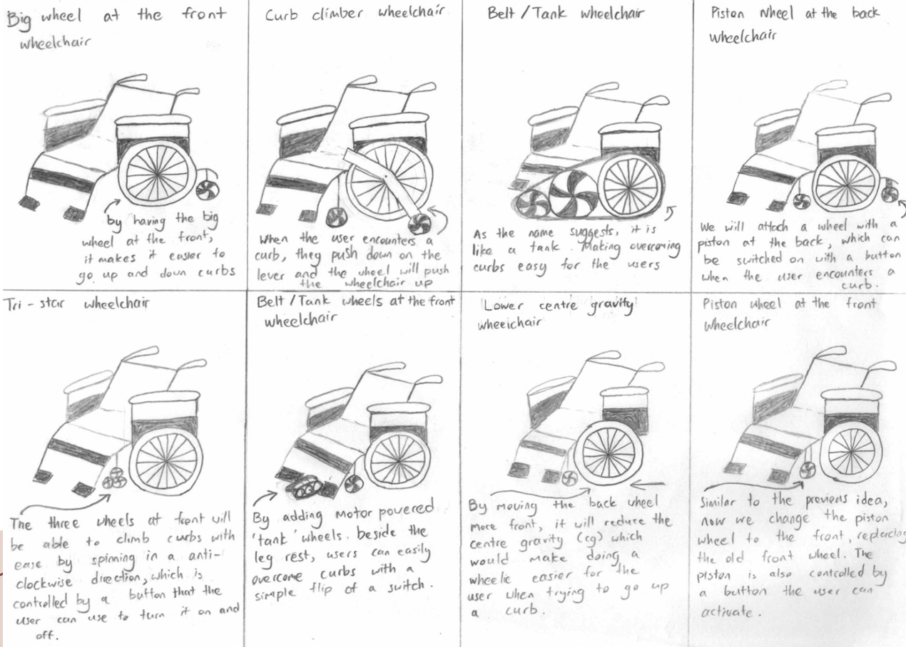

01
Ideation Process
We began with a Crazy 8s ideation exercise to generate different wheelchair concepts. Ideas included larger front wheels, a curb-climber wheelchair, belt or tank wheels, piston-assisted wheels, a lower centre of gravity and a tri-star wheelchair.